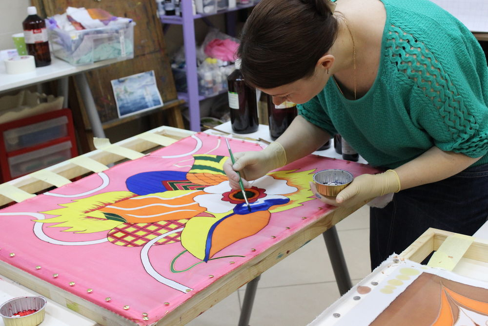

О студии
Курсы
Преподаватели
Контакты
+7(909)123 45 67
Студия художественной
росписи по ткани BATIK
Мастерклассы для вас и для ваших детей
Чему мы можем научить?

Создавать узоры на шелке
Изготавливать штампы для паттернов
Художественно формлять текстиль